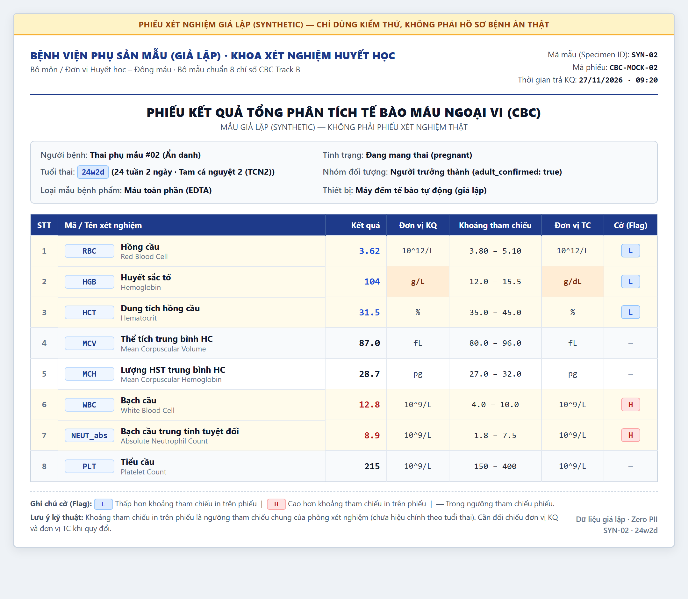

49.70% thai phụ khỏe bị lệch ngưỡng HGB và 87.10% câu hỏi vướng đọc hiểu
“WBC: 11.9 (CSBT: 4-10) ... 03 chỉ số trên ở phiếu kết quả của em bị gạch chân là như thế nào ạ?”
“xét nghiệm máu ko bị thiếu máu... Em muốn uống tăng lên 1 ngày 2 ống sắt dc ko ạ.” (Dùng 4 nguồn độc lập.)
25.6% thiếu máu thai kỳ toàn quốc và bài toán 2.250.000 phút/tháng
| Hướng bài toán | Quy mô & Bằng chứng nền | Tần suất / tháng | Chi phí / lần | Quyết định & Lý do |
|---|---|---|---|---|
| Hướng B · 8 chỉ số CBC thai kỳ TCN 1–3, chế độ lab/study + cổng từ chối |
25.6% thiếu máu; 49.70% sai ngưỡng HGB; 84.38% Q&A thai kỳ; giả định 100.000 người* |
1.5 lần* (8–12 lần/9 th)
|
15 phút* (tra cứu & lo)
|
✓ CHỌN Bằng chứng R1 mạnh nhất, workflow tất định an toàn. |
| Hướng A · CBC người lớn không mang thai | Nhóm khám tổng quát (thiếu bộ RI chuẩn DxH 900 VN) |
0.3 lần*
|
10 phút*
|
✕ LOẠI Bỏ sót nút thắt 49.70% sai ngưỡng thai kỳ. |
| Hướng C · Tự chẩn đoán & kê liều sắt từ ảnh | 30.59% ca Từ Dũ hỏi thuốc sắt; 12.10% trộn đơn vị |
0.5 lần*
|
20 phút*
|
✕ LOẠI Ngoài thẩm quyền y tế & rủi ro OCR lệch 10×. |
Workflow cố định: tách tính toán Decimal và 3 lớp chặn khỏi tầng LLM
Workflow cố định (codebase/agent.py): Đổi đơn vị và so ngưỡng phải tất định 100%; không dùng agent tự chủ vì tăng trễ/token và có rủi ro bỏ qua cổng kiểm.
Công cụ: compare_cbc (Decimal) & transcribe_wav (Zipformer ONNX cục bộ). Mọi thao tác sửa phiếu/chép giọng nói đều hủy xác nhận cũ.
Thực nghiệm trực tiếp: đúng ca thường (B01), đổi đơn vị 10× (B17) và chặn kê thuốc (B23)

Định tuyến tất định nâng tỷ lệ đạt từ 79% (19/24) lên 92% (22/24)
Run 1 hỏi lại chung chung dù câu hỏi nêu rõ WBC, HCT, MCV, MCH → ưu tiên định tuyến tất định, nhóm biên đạt 8/8 (100%).
Hỏi “MCHC khác MCH ở điểm nào?” → mới giải thích MCHC, chưa đối chiếu nồng độ với lượng. Cần bổ sung trong code N2.
RBC 4.2, khoảng lab null → fallback sang khoảng nghiên cứu TCN2 thay vì hỏi lại. Fixture thiếu reference_mode: lab (giữ 0đ).
Chi phí LLM chỉ $0.000071–$0.00041 / task ($0.0568–$0.3256 / tháng cho 500 người)
| Chỉ tiêu chi phí | Flash-Lite | Hydrogen |
|---|---|---|
| Chi phí / phiên trung bình | $0.000065 | $0.00037 |
| Chi phí / task đạt (÷ 22/24) | $0.000071 | $0.00041 |
| Chi phí / người / tháng (cơ sở) | $0.00011 | $0.00065 |
| Thấp · Cơ sở · Cao (USD/th) | $0.0114 · $0.0568 · $0.1705 | $0.0651 · $0.3256 · $0.9767 |